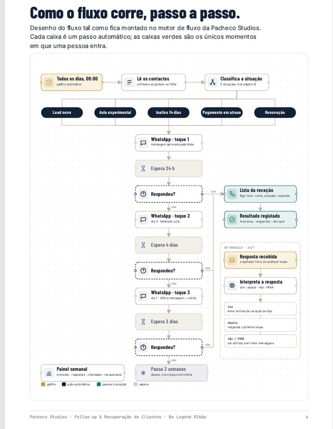

Direção de mercado · 26/09/2026
Como a Pacheco Studios ganha a confiança de quem não entende a IA e desconfia dela: não pela dor, não pela promessa, mas por mostrar como as coisas são feitas. A visão do Tomás, desenvolvida e posta em prática.
1 · O diagnóstico
O dono de um restaurante já sabe que perde chamadas ao almoço. Já sabe que a cadeira das quatro ficou vazia. A página das automatizações mostra-lhe isso e ele concorda com a cabeça. E depois não liga. Porquê?
«IA» é uma palavra de televisão. Não sabe de onde vem, onde corre, quem manda nela. O que não se entende, teme-se.
Nós ainda não temos sistemas a correr para mostrar. Sem provas, o que resta é a nossa palavra. E a nossa palavra é a de quem quer vender.
Ligar é assumir um risco no escuro: dinheiro, tempo, e o medo de fazer figura de parvo com os clientes dele.
Vender pela dor pede fé.
Vender pela transparência pede lógica.
Identificar a dor continua a ser o gancho: é o que faz o dono parar de ler. Mas depois do gancho tem de vir a razão para confiar. E a razão não pode ser um resultado que não podemos provar; tem de ser algo que ele consiga ver e julgar sozinho: como a coisa funciona, que regras segue, quem decide o quê, o que ele vai ver na primeira semana.
É exatamente o que a proposta para o ginásio Be Legend faz (página 5): o fluxo desenhado, caixa a caixa, com os momentos em que entra uma pessoa a verde. Quem lê aquilo não precisa de acreditar em IA. Percebe que é lógica: se aconteceu X, faz-se Y; se ninguém responde em 24 horas, segundo toque. Isso qualquer dono de negócio entende, porque é assim que ele próprio pensa.
Competência: «este tipo sabe fazer isto». Prova-se com o desenho do sistema, não com adjetivos.
Transparência: «vejo como funciona e o que não faz». Prova-se com as regras em linguagem simples e com o registo de tudo o que a máquina faz.
Controlo: «mando eu». Prova-se com o dono a aprovar cada texto, a poder parar tudo com uma palavra, e a ver os números todas as semanas.
2 · A explicação
Uma explicação só, sempre a mesma, no site, na página romena, no cartão e à mesa. Sem «modelos», «tokens» ou «agentes». Cinco frases.
Lê e escreve texto, como uma pessoa muito rápida que nunca se cansa. É só isso que faz. Não «pensa» por ti, não decide nada sozinha.
As regras são nossas e tuas. Nós desenhamos o que acontece em cada situação («se não responde em 24 h, segundo toque»). Tu aprovas cada texto que ela pode enviar. Ela escolhe entre respostas aprovadas; não inventa preços nem promessas.
Corre nas tuas contas. O WhatsApp é o teu, a agenda é a tua, o Google é o teu. Os dados dos teus clientes ficam onde já estavam.
Tudo fica registado. Cada mensagem que enviou, a que horas, a quem, e o que respondeu. Podes ler tudo, quando quiseres.
Quando sai da rotina, entra uma pessoa. Uma pergunta que não sabe, um cliente zangado, uma reserva estranha: passa para ti ou para nós, com a conversa inteira. A máquina trata do repetitivo; as pessoas tratam do resto.
Repara que nenhuma destas frases promete um resultado. Todas descrevem um mecanismo. É por isso que se pode dizê-las a um estranho sem corar, hoje, sem um único cliente a correr.
| O dono diz | Nós respondemos (com o desenho na mão) |
|---|---|
| «E se a IA responder uma asneira ao meu cliente?» | Só responde com textos que tu aprovaste. O que não sabe, não responde: passa-te a conversa. E fica tudo gravado para ler. |
| «Os meus clientes não gostam de falar com robôs.» | Ela trata do que é rotina: horário, morada, «têm mesa para quatro?». Em tudo o resto entra uma pessoa. E não se faz passar por ti: se perguntarem, diz o que é. |
| «Isto é caro e complicado.» | O desenho tem seis caixas. Montamos uma automatização de cada vez, na tua conta de WhatsApp, e tu vês o painel semanal. O preço combina-se pelo desenho, não pela palavra «IA». |
| «E se não resultar?» | Combinamos antes o que vamos medir (chamadas respondidas, faltas, avaliações). Vês os números todas as semanas. Se não te servir, desliga-se com uma mensagem. |
| «Já vi disto na televisão, é para as grandes.» | As grandes usam exatamente isto: lembretes de marcação, pedidos de avaliação, resposta automática. A diferença é que aqui é montado para o teu balcão e tem o meu número ao lado. |
3 · O princípio
O produto que se mostra deixa de ser «uma automatização» e passa a ser o plano de uma automatização: desenhado, com regras, com os pontos de entrada de uma pessoa e com o que se vai medir. O dono compra um plano que percebeu, não uma tecnologia que teme.
Gancho: a dor, na voz do dono. ✓
Depois: «como funciona» em quatro frases, «o que obténs», «o que precisas».
O que falta: ver a máquina. As quatro frases pedem que se acredite. Não há desenho, não há regras, não há «quem decide», não há nada para experimentar.
Resultado: o dono concorda com a dor e adia a decisão.
Gancho: a mesma dor. ✓
O desenho: o fluxo como fica montado, caixa a caixa, cores por tipo (gatilho, automático, pessoa, decisão).
As regras: três ou quatro frases «se… então…» em linguagem de balcão.
Quem decide o quê: o dono aprova os textos, a máquina escolhe entre eles, a pessoa entra no resto.
O que vais ver: a mensagem real que o cliente recebe e o painel da primeira semana.
Experimenta agora: um número de WhatsApp onde a recepcionista responde em dois minutos.
4 · O modelo

Esta página vale mais do que qualquer texto sobre IA, e é ela que define o padrão de tudo o que se mostra daqui para a frente:
É a diferença entre «temos um sistema de follow-up com IA» e «é isto que acontece com cada contacto do teu ginásio». O segundo não pede fé.
| Página | O que tem |
|---|---|
| Capa | Nome do negócio, o que se propõe numa frase, data. |
| A dor | Nas palavras do dono, tal como as disse na conversa. Duas ou três frases, sem números inventados. |
| O fluxo desenhado | Como o da Be Legend. Gatilho, passos, decisões, esperas, pessoa a verde, fim. |
| As regras | As frases «se… então…» que a máquina segue. O que nunca faz. |
| O que medimos | Três números, combinados com o dono, vistos no painel semanal. |
| O que precisa do dono | Contas, acessos, os textos para aprovar, uma hora da sua parte. |
| Preço e arranque | Pelo desenho, não pela palavra «IA». Como se desliga. |
5 · Como fica na página
• Nunca inventa preços: só diz o que está na lista aprovada.
• Não sabe? Não responde. Passa a uma pessoa.
• Fora de horas diz quando abre e regista o pedido.
• Se perguntarem, diz que é um assistente automático.
• Cada mensagem fica gravada. O dono lê quando quiser.
Dono: aprova os textos, a agenda, o horário. Pode parar tudo com uma palavra.
Máquina: escolhe entre respostas aprovadas, escreve na agenda, regista.
Pacheco Studios: desenha, monta, afina com o painel.
Escreve «olá» para o número da demo e fala com a recepcionista de um restaurante que não existe. Dois minutos.
6 · As provas possíveis hoje
Não precisamos de resultados de clientes para dar confiança. Precisamos de coisas que o dono possa ver, tocar e julgar. Estas existem ou fazem-se em dias, e nenhuma mente.
A demo que responde. Um número de WhatsApp com a recepcionista de um restaurante fictício («Restaurantul Demo»). O dono escreve à mesa, à frente de nós, e vê a máquina responder, marcar, e passar-nos a conversa quando não sabe. É a prova mais forte que existe e monta-se com o que já temos (WhatsApp Cloud API + n8n + Claude, o mesmo desenho do sistema da Dra. Angélica). Uma demo por automatização, a começar pela recepcionista.
Os planos desenhados, publicados. A proposta Be Legend e mais duas ou três (uma por tipo de negócio) na página, como «planos que já desenhámos». Um dono que lê um plano feito para um ginásio percebe o que receberia para o restaurante dele.
O diário de construção. Por cada automatização, três capturas de bastidores: o fluxo no n8n, a tabela onde ficam os registos, a mensagem real a chegar a um telemóvel. Com uma legenda de uma linha. Mostra que é trabalho, não truque.
O piloto com números combinados. Uma automatização, trinta dias, três números escolhidos com o dono antes de começar. Painel semanal. Se não servir, desliga-se. (As condições de preço do piloto são decisão tua; o formato é este.)
A cara. Já está no site: «dou a cara por isso», resposta no próprio dia. Reforça-se com a foto e com o telefone em todo o lado. Confia-se em pessoas, não em estúdios.
Percentagens de resultados que não medimos. Testemunhos que não existem. «Casos de sucesso» de demos. Logótipos de quem não é cliente. Dizer que a máquina «entende» ou «pensa». Esconder que é um assistente automático quando o cliente pergunta. Uma só destas deita abaixo tudo o que a transparência construiu.
7 · A conversa
Perguntas, não apresentação. «Quantas chamadas perdes ao almoço?» «Quem responde ao Instagram?» «Quando é que soubeste que a mesa das oito não vinha?» Escrever as frases dele tal como as diz.
Numa folha ou no tablet: o gatilho, três passos, onde entra ele. Perguntar «e aqui, o que querias que acontecesse?». Deixar que corrija. O plano passa a ser dele.
«Escreve para este número.» Vê a resposta em cinco segundos. Pede uma reserva. Faz uma pergunta difícil e vê a conversa chegar ao nosso telemóvel.
Uma automatização, os três números que vamos medir, o que precisamos dele (contas, textos para aprovar, uma hora). A proposta em PDF no formato-padrão chega no mesmo dia.
«Nu promitem. Arătăm.»
já é esta direção.
O cartão diz «não prometemos, mostramos». A página tem de cumprir o que o cartão diz: quem aponta a câmara vê sites reais e, nas automatizações, vê a máquina. Se a página só descrevesse, o cartão estaria a mentir.
8 · O que muda, e quando
Esta semana — a página mostra a máquina. As oito automatizações da página romena ganham o desenho do fluxo, as regras, «quem decide o quê» e a mensagem que o cliente vê. Publicam-se os planos desenhados (Be Legend e mais dois). Versão portuguesa para rever.
Duas semanas — a demo que responde. A recepcionista do «Restaurantul Demo» num número de WhatsApp: WhatsApp Cloud API + n8n + Claude, lista de respostas aprovadas, agenda de teste, passagem a pessoa. Depois, a segunda demo (marcações e lembretes). A página ganha «Experimenta agora».
Primeiro piloto — e o diário. Um negócio, uma automatização, trinta dias, três números. Publicam-se as capturas dos bastidores e o painel (com autorização e sem dados dos clientes dele). A partir daqui, as provas passam a ser reais e acumulam.
O obstáculo é a confiança, não a dor · vendemos o plano, não a promessa · toda a automatização mostra-se com o fluxo desenhado, as regras e quem decide o quê · a explicação da IA é sempre a mesma, em cinco frases · provas: demo viva, planos publicados, diário de construção, piloto medido · nunca números inventados, testemunhos falsos ou casos que não existem · formato-padrão das propostas: o da Be Legend.
Nada disto exige clientes a correr para começar. Exige desenhar bem, explicar simples e deixar o dono ver. É trabalho, e é lógica pura. O resto vem atrás.